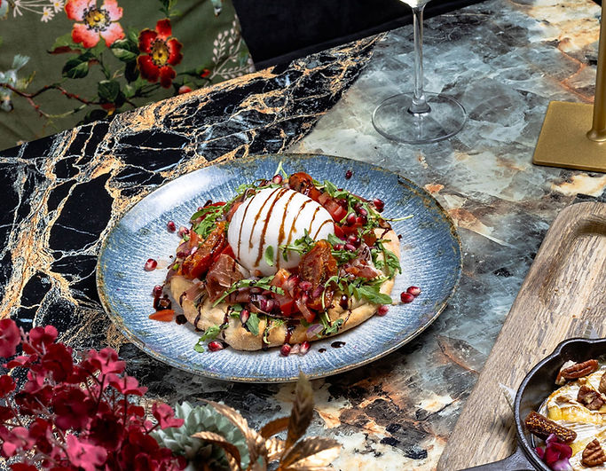
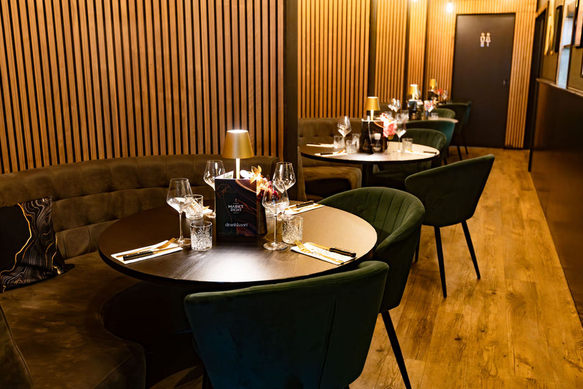
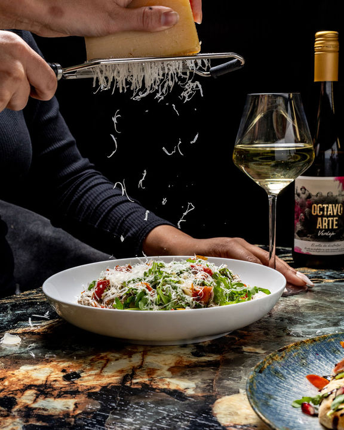
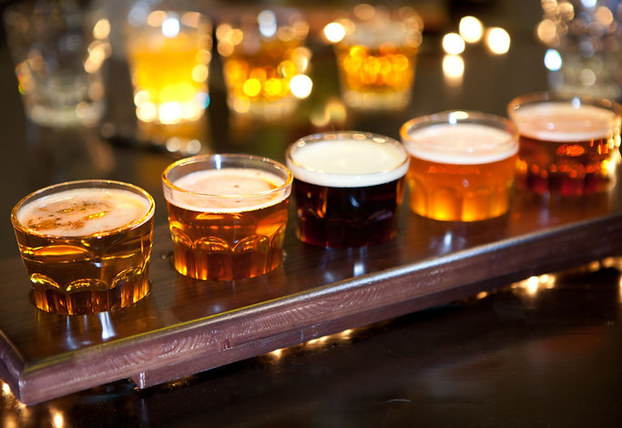
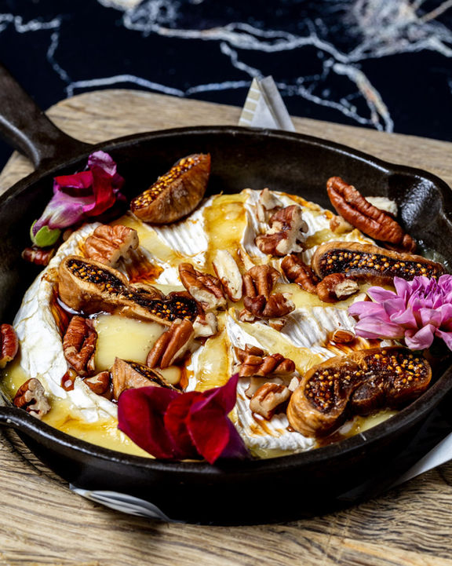

Lunch
Van 12:00 tot 17:00 uur
Broodjes op wit of bruin desembrood, tosti's, soep, burgers en salades. Of een 12-uurtje met tomatensoep, sandwich en kroket.
Smaakvol lunchen en dineren, ontspannen borrelen en gezellig shared dining op de markt.
Open vanaf 12:00 uur
Sinds 2021 is Marktzicht in Zevenbergen the place to be voor jong en oud voor een lekkere lunch of diner, én altijd gezellige borrel die van ons uit mag lopen tot laat in de nacht.
Naast goede koffie met gebak, serveren wij een ruime keuze aan smakelijk eten tegen een goede prijs, altijd versbereid door onze gepassioneerde keukenbrigade.
Bij Marktzicht maken we graag een verschil in gastvrijheid én gezelligheid. Ons vriendelijke personeel staat voor je klaar en heet iedereen, ook groepen, van harte welkom. Alles is mogelijk wat ons betreft. Vertel ons je wensen, dan zorgen wij voor de culinaire invulling, mét een drankje uiteraard!


V = vegetarisch, VB = vegetarisch te bestellen. Vegan eten in overleg. Allergieën en/of dieetwensen? Vraag naar de mogelijkheden.
Lunchgerechten zijn te bestellen van 12:00 tot 17:00 uur en worden geserveerd met wit of bruin desembrood.
Inclusief friet, mayonaise en salade
Salades worden geserveerd met brood en zijn ook als hoofdgerecht te bestellen
De dinerkaart is te bestellen vanaf 16:30 uur.
Voorgerechten: perfect om te delen, maar ook heerlijk om zelf te houden
Inclusief friet, mayonaise en bijpassende groenten. Salades kunnen ook als hoofdgerecht besteld worden.
Gerechten worden geserveerd met mayonaise en appelmoes
Tussen 12.00 en 17.00 uur
Maak zelf je eigen borrelplank. V = vegetarisch of vegetarisch mogelijk. Vegan eten in overleg.
Laat je door ons verrassen! Op alle shots van 3.00: 10 shots halen, 8 betalen.
Koffiespecials
Met bruis- of plat water
Een rekening per tafel.
Op zoek naar een gezellige middag of avond met familie, vrienden of collega's? Bij Marktzicht geniet je dagelijks van een uitgebreide High Wine, High Beer, High Cocktail of High Mocktail. Een smaakvol arrangement waarbij heerlijke hapjes worden gecombineerd met zorgvuldig geselecteerde dranken, in drie rondes.

Onze Highs zijn te reserveren vanaf 12.00 uur. Het laatste tijdstip waarop je kunt starten is 19.30 uur.
Reserveer minimaal 24 uur van tevoren.
Heb je allergieën of dieetwensen? Geef deze dan vooraf bij je reservering door.
Op evenementendagen serveren we geen Highs. Vragen? Mail ons via info@markt-zicht.nl.

Geniet thuis, op kantoor of tijdens een speciale gelegenheid van de gerechten van ons restaurant met onze Marktzicht afhaalservice. Zowel voor de lunch als het diner kun je eenvoudig je favoriete gerechten bestellen en op een gewenst tijdstip afhalen.
Verzekerd van dezelfde kwaliteit en smaak die je van ons gewend bent.
Wil je een grotere bestelling voor bijvoorbeeld een vergadering, bedrijfseten, feest of andere bijeenkomst? Dan kunnen wij in overleg ook bezorging verzorgen. Neem gerust contact met ons op om de mogelijkheden te bespreken; wij denken graag met je mee.
Bestel via 0168-556737Onze openingstijden wisselen per seizoen.
Wo, do & zo 12:00 - 21:30 uur
Vr & za 12:00 - 00:00 uur
Ma, wo, do & zo 12:00 - 21:30 uur
Vr & za 12:00 - 01:00 uur
7 dagen geopend 12:00 - 23:00 uur
Vr & za tot 01:00 uur
Ma, wo, do & zo 12:00 - 21:30 uur
Vr & za 12:00 - 01:00 uur
Bel ons voor een tafel, een High of een grotere afhaalbestelling. Ook groepen zijn van harte welkom.